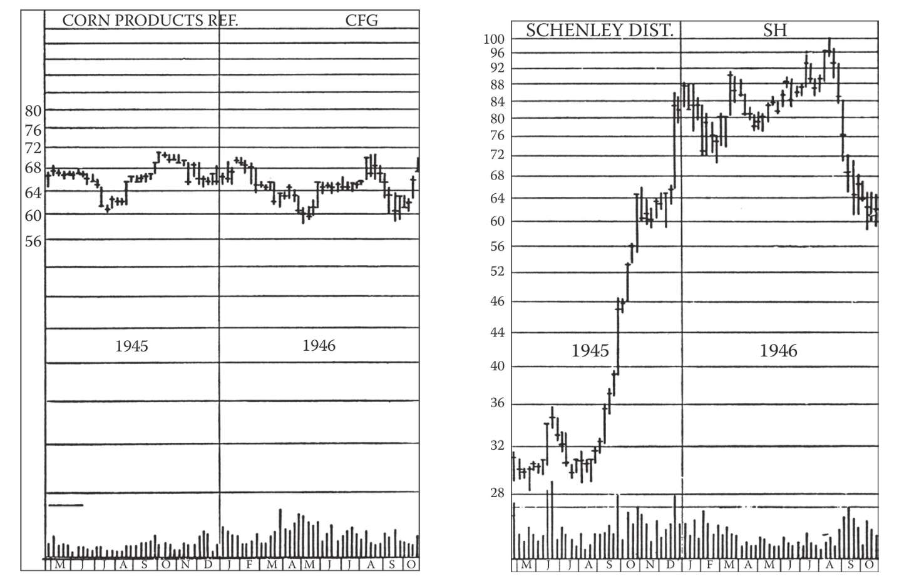
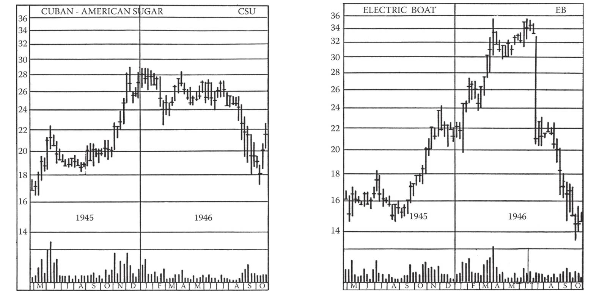
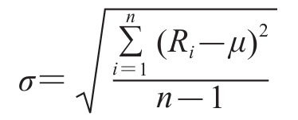

第24章 股价可能出现的变化
乍一看，所有股票的走势似乎是杂乱无章、毫无道理的。有时所有股票一齐上涨，有时所有股票一齐下跌，有时参差不齐、涨跌互现。但我们已经看到，股票的上涨和下跌呈现特定趋势，构筑典型形态，并非完全无序。
确实每一只股票都有自己长期稳定的股性。当大盘处于牛市时，一些股票涨势凶猛，而另一些同样价位的股票却步履蹒跚。那些在牛市中涨幅居前的个股往往在熊市中跌幅居前，而那些在牛市中显得滞涨的个股往往在熊市中更为抗跌。有些股票的波动速度比其他股票快许多倍。例如，我们不知道从现在起一年后格伦马丁公司（Glenn Martin）（编者按：类似的还有微软、eBay）的股价是上涨还是下跌，但是我们很有把握地知道，无论其股价上涨还是下跌，它都会比美国电话电报公司（American Telephone and Telegraph）上涨或下跌得更快。造成股性差异的原因有很多，包括已发行股份的数量、流通股的规模、企业的性质、资本结构中的杠杆等。事实上，我们并不特别关心造成股性差异的原因。我们主要关心这些差异是什么，以及我们怎样确定这些差异。
值得注意的是，那些波幅很小、分红稳定的股票虽然是理想的投资品种，却不是理想的交易品种。为了在覆盖成本后还有利润，要求交易品种具有较高的敏感性（编者按：波动率）和较大的波动幅度。交易的股票至少要达到15%的波幅，那样才有钱可赚。
那么，你怎样知道哪些股票最敏感、最有可能赚钱？
通过回顾某只股票过去数年的交易记录，将其波幅与大盘的波幅相比较，你可以较好地了解该股票的习性。你在任何时候都没有把握说“这只股票现在将上涨25%”，但是你有把握说：“如果大盘上涨10%，那么这只股票很可能上涨25%左右。”或者相反，你有把握说：“如果大盘下跌10%，那么这只股票很可能下跌25%或更多。”（第10版编者按：这就是贝塔系数的概念。）
有许多方法可用于测量及分析个股的波动习性，它们只有一些细节上的差异。（第10版编者按：利用桌面及互联网软件，投资者现在可以轻松调用2年或5年的股价走势图，查看股价的潜在波幅。）本书作者计算了在纽约证券交易所挂牌的数百只重要股票构成的一些指数，它们已收录在本书第9版的附录A中。（第10版编者按：迈吉关于“敏感性”的概念似乎糅合了当今贝塔系数和波动率指标的某些方面。除了迈吉的“敏感性指数”，你还可在finance.yahoo.com、http://www.abg-analytics.com及其他可由谷歌搜索到的网站上找到类似指标。）
（编者按：在本书建议的其他一些计算方法中，当今的贝塔系数或波动率指标可以替换上述指标，例如在综合杠杆率（composite leverage）的计算公式中。下文中的“敏感性指数”都可替换成“贝塔系数”。）
指数都是相对而言的。在牛市或熊市中，敏感性指数（编者按：贝塔系数）较高的个股比该指数较低的个股上涨或下跌得更快，敏感性指数的高低体现了相对涨跌快慢的程度。
（编者按：迈吉的方法早在贝塔系数和波动率指标问世之前就形成了。贝塔系数衡量的是个股的系统性风险，即个股对大盘走势的敏感性。波动率衡量的是个股自身回报率的离差。因此如果市场波动1个百分点，那么贝塔系数为1.5的股票将波动大约1.5个百分点，而贝塔系数为0.5的股票将波动大约0.5个百分点。显然，贝塔系数越大，个股的波动性就越高。喜欢自行计算的读者可参见下面的贝塔系数计算公式，它比迈吉的方法复杂。

图24-1 有些股票波动得比其他股票快。我们已经注意到，低价股的波动幅度往往远超高价股。但即便是两只同样价位的股票，其股性也可能大相径庭。此外，个股的股性通常很稳定，可保持多年不变。
左边是玉米产品精制公司的股价走势图，时间是1945～1946年的18个月。右边是同期申利蒸馏酒公司的股价走势图。两张图上最高价和最低价的平均值都在64½美元左右。
然而在此期间，我们看到玉米产品精制公司股价低至58½美元、高至71美元，波幅达到12½美元，同期申利蒸馏酒公司股价低至28½美元、高至100美元，波幅达到71½美元。如果在玉米产品精制公司股价到达最低点时投入1000美元，那么当它到达最高点时你就有1210美元，而如果在申利蒸馏酒公司股价到达最低点时投入1000美元，那么当它到达最高点时你就有3510美元。你在申利蒸馏酒公司股票上赚得2510美元，是在玉米产品精制公司股票上赚得的210美元的10倍多。
你当然不太可能真的在最低点买入、在最高点卖出。我们想说的是，不同股票的波动性可能差别很大。
个股有自己的特性，行业也一样。一般来说，食品股比较稳定，涨跌较慢。相比之下，酒类股在大盘上涨或下跌时都冲在前面。图上这段时期内，玉米产品精制公司股票的敏感性指数为0.58，而申利蒸馏酒公司股票的敏感性指数为2.05（第9版编者按：该指数相当于贝塔系数）

图24-2 这是又一个关于股票波动性差异的例子。此例中的两只股票在1945～1946年的同样18个月里，最高价和最低价的平均值也相同。尽管两者同处低价区域，且两者的敏感性指数差距较小，两者的走势仍有显著差异。左边图中，食品股古巴-美国糖业公司的股价低至16½美元、高至29美元，波幅达到76%，而造船股电力船舶公司的波幅达到了140%多
个股贝塔系数＝（（N）（XY之和））-（（X之和）（Y之和））
式中，N为观察次数；X为标普500指数回报率；Y为个股或基金回报率。
普通投资者不太会关心上述计算过程，何况贝塔系数已能在Value Line、finance.yahoo.com等网站上轻松获得，且由美林公司定期发布。你可用谷歌搜索到各种贝塔系数。在seekingalpha.com网站上还有一些清单。finance.yahoo.com的“重要数据”（Key Statistics）板块显示了每只股票的贝塔系数。
波动率是一个同样甚至更加重要的指标。波动率有点像迈吉的“正常价格区间”，衡量的是个股回报率（价格波动）的易变性。关于波动率的研究是一门极其复杂的学问，许多专业人士在这个领域花费了大量资源。计算波动率的方法现在有无数种，但它们主要用于期权套利和专业场内交易。
对于个人投资者来说，知道这个神秘领域充满危险就足够了。在开始对波动率下注之前，新手最好透彻地学习一下相关知识。想知道怎样自行计算波动率（不推荐也不必要）的普通投资者可以参考下面的公式。
为了计算波动率，首先算出每个回报率与平均回报率之差。然后对每个差求平方并加总，所得的和除以回报率个数减1，得到的值称为方差。最后对方差求平方根，即得到波动率。上述步骤合并成一个公式就是：

·第1步：计算平均回报率。
·第2步：计算每个回报率的离差。
·第3步：对每一期的离差求平方。
·第4步：将它们加总。
·第5步：所得的和除以期数减1，得到方差。
·第6步：求平方根。
投资者可在http://www.optionstrategist.com 、http://www.cboe.com 、finance.yahoo.com以及可用谷歌搜索到的其他网站上，找到各种波动率数据。）